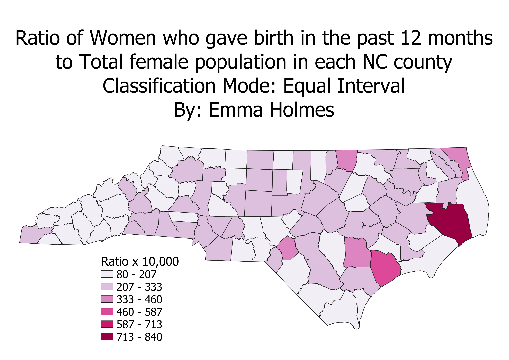
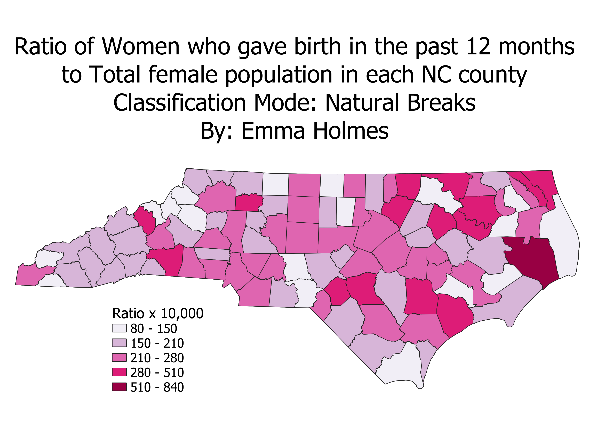
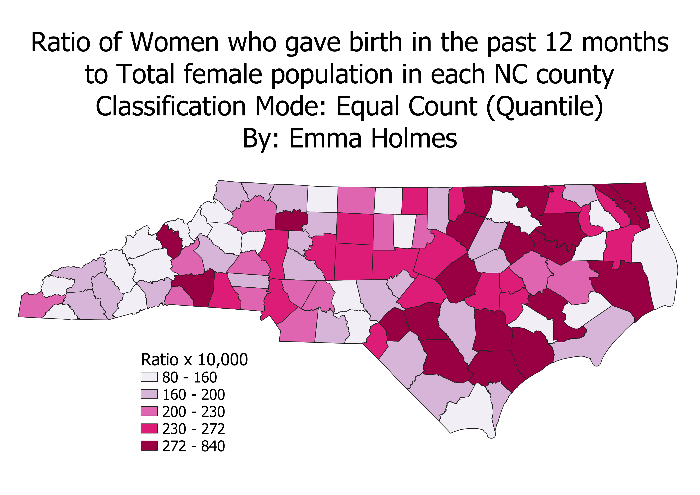

Homework 6 Part 2: Census Data Ratio and Categories
By Emma Holmes
The ratio that I created is the number of women between the ages of 15 to 50 that have given birth in the past
12 months to the total female population. I realize now that a better ratio would have be to do the total
female population between the ages of 15 and 50 in each county, so it doesn't include women who might have given
birth before the age of 15 or after the age of 50. However, I chose the ratio that I chose because it gives a
better sense to the viewer of the map which county in North Carolina has had the most births related to their
population and therefore is the most fertile. In the previous map that I made where it just showed women who gave birth in each county, Wake County
and Mecklenburg county had the highest numbers, because they have the highest population, so it did not relate
to the fertility of the counties. In this ratio, Hyde County is the largest, but there were only 201 births in the county,
but the total female population is only 2,383.
In these maps, I multiplied the ratio by 10,000 to make it larger and easier to read because the numbers were so small.
Equal Interval Classification

A pro for this classification mode is that the legend is easy to read and it's easier to understand the data.
A con is that the majority of the data falls within the 80 to 207 and 207 to 333 ranges and there is no data that
falls within the 587 to 713 range.
Natural Intervals Classification

A pro for this classification mode is that it uses an algorithm that makes class ranges which are specifc
to the data and makes the map easy to read. A con for this classification is that the data ranges vary widely,
so the middle range (210-280) is much smaller than the largest range (510-840).
Quantile Classification

A pro for this classification mode is that the data is more evenly distributed throughout the ranges,
so the 80-160 range does a good job of showing the 20% of the counties that had the lowest rates of fertility.
A con for this classification mode is that the highest range, 272-840, is so large that the rates within this
range have very different values.